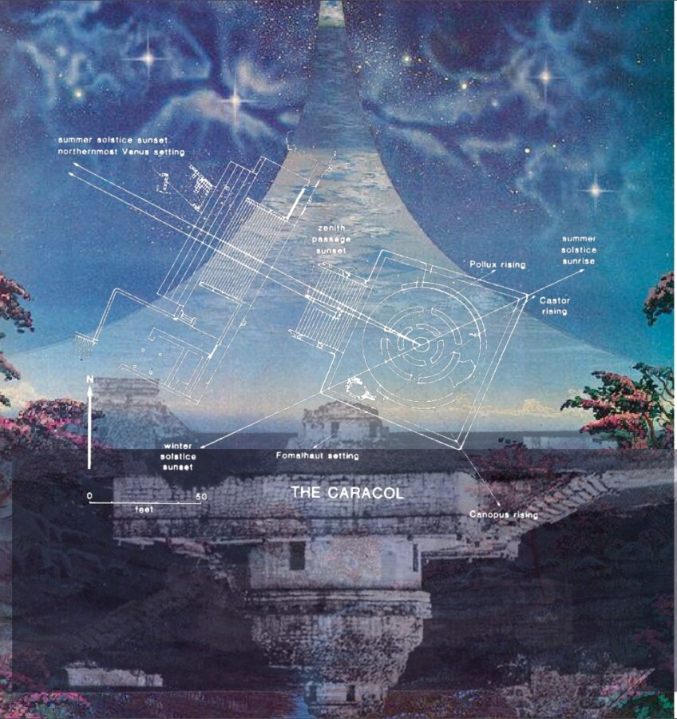

Josué Esaú: The Carocal
Josué Esaú Romero Velasquez was born in Honduras, raised in San Antonio, and currently lives in Chicago. He is an educator at Arts + Public Life on the city’s South Side, sharing design and fabrication skills with youth. He is also a visual artist and multidisciplinary fabricator, building furniture, sets, and installations in support of his community. Josué holds a BFA from Southwest School of Art (now UTSA Southwest) and an MFA from Columbia College Chicago. He is an alum of the Hyde Park Art Center (Chicago) Center Program Biennial and Class of 2025.